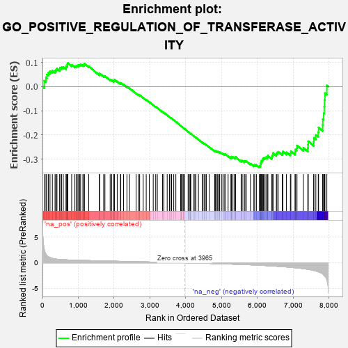

| | | Dataset | 7d |
| Phenotype | NoPhenotypeAvailable |
| Upregulated in class | na_neg |
| GeneSet | GO_POSITIVE_REGULATION_OF_TRANSFERASE_ACTIVITY |
| Enrichment Score (ES) | -0.33452043 |
| Normalized Enrichment Score (NES) | -1.1241503 |
| Nominal p-value | 0.2542735 |
| FDR q-value | 0.7335181 |
| FWER p-Value | 1.0 |
Table: GSEA Results Summary

Fig 1: Enrichment plot: GO_POSITIVE_REGULATION_OF_TRANSFERASE_ACTIVITY
Profile of the Running ES Score & Positions of GeneSet Members on the Rank Ordered List
| PROBE | GENE SYMBOL | GENE_TITLE | RANK IN GENE LIST | RANK METRIC SCORE | RUNNING ES | CORE ENRICHMENT | | 1 | TGFB3 | | | 49 | 2.654 | 0.0241 | No |
| 2 | IRS1 | | | 98 | 1.659 | 0.0369 | No |
| 3 | ADCY8 | | | 124 | 1.418 | 0.0499 | No |
| 4 | AXIN1 | | | 166 | 1.159 | 0.0579 | No |
| 5 | SPDYA | | | 211 | 1.026 | 0.0640 | No |
| 6 | HGF | | | 276 | 0.870 | 0.0658 | No |
| 7 | GSK3A | | | 351 | 0.745 | 0.0648 | No |
| 8 | CLSPN | | | 379 | 0.719 | 0.0696 | No |
| 9 | NBN | | | 405 | 0.696 | 0.0744 | No |
| 10 | CDC20 | | | 480 | 0.644 | 0.0723 | No |
| 11 | RFC2 | | | 488 | 0.635 | 0.0786 | No |
| 12 | PKN1 | | | 535 | 0.619 | 0.0798 | No |
| 13 | CCNB1 | | | 581 | 0.601 | 0.0809 | No |
| 14 | PARN | | | 660 | 0.572 | 0.0775 | No |
| 15 | RFC3 | | | 663 | 0.571 | 0.0838 | No |
| 16 | MRE11 | | | 693 | 0.560 | 0.0865 | No |
| 17 | XRCC6 | | | 694 | 0.560 | 0.0929 | No |
| 18 | CDC6 | | | 709 | 0.557 | 0.0974 | No |
| 19 | RFC4 | | | 815 | 0.528 | 0.0900 | No |
| 20 | STOX1 | | | 905 | 0.506 | 0.0844 | No |
| 21 | CCND2 | | | 949 | 0.496 | 0.0846 | No |
| 22 | DVL3 | | | 971 | 0.490 | 0.0875 | No |
| 23 | TELO2 | | | 1006 | 0.482 | 0.0887 | No |
| 24 | AKT1 | | | 1040 | 0.476 | 0.0899 | No |
| 25 | FZD10 | | | 1065 | 0.470 | 0.0922 | No |
| 26 | SRC | | | 1128 | 0.459 | 0.0895 | No |
| 27 | CKS2 | | | 1165 | 0.452 | 0.0901 | No |
| 28 | CCNY | | | 1168 | 0.451 | 0.0950 | No |
| 29 | DKC1 | | | 1292 | 0.431 | 0.0842 | No |
| 30 | ERP29 | | | 1589 | 0.376 | 0.0506 | No |
| 31 | CCNK | | | 1596 | 0.374 | 0.0541 | No |
| 32 | TPX2 | | | 1708 | 0.355 | 0.0439 | No |
| 33 | MRNIP | | | 1743 | 0.346 | 0.0436 | No |
| 34 | PAK3 | | | 1889 | 0.322 | 0.0287 | No |
| 35 | HACD3 | | | 1932 | 0.315 | 0.0269 | No |
| 36 | MOB1B | | | 1991 | 0.306 | 0.0230 | No |
| 37 | ROR1 | | | 1993 | 0.306 | 0.0264 | No |
| 38 | RAF1 | | | 2011 | 0.303 | 0.0276 | No |
| 39 | CENPE | | | 2086 | 0.293 | 0.0215 | No |
| 40 | DDR1 | | | 2176 | 0.280 | 0.0133 | No |
| 41 | SYK | | | 2186 | 0.278 | 0.0154 | No |
| 42 | SHC2 | | | 2263 | 0.266 | 0.0087 | No |
| 43 | MIF | | | 2357 | 0.252 | -0.0003 | No |
| 44 | MET | | | 2430 | 0.240 | -0.0068 | No |
| 45 | VAV3 | | | 2614 | 0.210 | -0.0278 | No |
| 46 | SASH1 | | | 2682 | 0.201 | -0.0341 | No |
| 47 | PHB2 | | | 2712 | 0.197 | -0.0356 | No |
| 48 | SYAP1 | | | 2811 | 0.182 | -0.0460 | No |
| 49 | FGFR2 | | | 2895 | 0.167 | -0.0547 | No |
| 50 | UBE2S | | | 2980 | 0.153 | -0.0637 | No |
| 51 | TIGAR | | | 3091 | 0.138 | -0.0762 | No |
| 52 | ERN2 | | | 3160 | 0.129 | -0.0835 | No |
| 53 | FZR1 | | | 3205 | 0.122 | -0.0877 | No |
| 54 | TAB1 | | | 3351 | 0.097 | -0.1052 | No |
| 55 | DDX3X | | | 3388 | 0.091 | -0.1087 | No |
| 56 | RFC5 | | | 3389 | 0.091 | -0.1077 | No |
| 57 | CDK5 | | | 3480 | 0.080 | -0.1183 | No |
| 58 | PIN1 | | | 3543 | 0.069 | -0.1254 | No |
| 59 | MAPK3 | | | 3589 | 0.062 | -0.1305 | No |
| 60 | DOK7 | | | 3603 | 0.059 | -0.1315 | No |
| 61 | SKP1 | | | 3663 | 0.049 | -0.1385 | No |
| 62 | DAXX | | | 3722 | 0.038 | -0.1454 | No |
| 63 | DGKQ | | | 3856 | 0.020 | -0.1622 | No |
| 64 | NEK2 | | | 3871 | 0.016 | -0.1639 | No |
| 65 | DGKZ | | | 3879 | 0.015 | -0.1646 | No |
| 66 | GCN1 | | | 3923 | 0.006 | -0.1700 | No |
| 67 | NRG3 | | | 3925 | 0.005 | -0.1701 | No |
| 68 | IGF1R | | | 3970 | -0.002 | -0.1757 | No |
| 69 | TAL1 | | | 4064 | -0.018 | -0.1874 | No |
| 70 | CSF1 | | | 4074 | -0.019 | -0.1883 | No |
| 71 | MTOR | | | 4114 | -0.025 | -0.1930 | No |
| 72 | ABL1 | | | 4125 | -0.027 | -0.1940 | No |
| 73 | PLCE1 | | | 4127 | -0.028 | -0.1938 | No |
| 74 | CRK | | | 4139 | -0.031 | -0.1949 | No |
| 75 | VAC14 | | | 4225 | -0.046 | -0.2052 | No |
| 76 | RPTOR | | | 4252 | -0.050 | -0.2080 | No |
| 77 | WNT11 | | | 4282 | -0.056 | -0.2110 | No |
| 78 | ADRB2 | | | 4352 | -0.068 | -0.2191 | No |
| 79 | ERCC6 | | | 4464 | -0.087 | -0.2323 | No |
| 80 | LRRK2 | | | 4467 | -0.087 | -0.2316 | No |
| 81 | ILK | | | 4510 | -0.096 | -0.2358 | No |
| 82 | NTRK2 | | | 4543 | -0.104 | -0.2387 | No |
| 83 | PNKP | | | 4572 | -0.111 | -0.2411 | No |
| 84 | FGFR3 | | | 4656 | -0.129 | -0.2502 | No |
| 85 | TNIK | | | 4804 | -0.158 | -0.2672 | No |
| 86 | FBXW7 | | | 4816 | -0.161 | -0.2668 | No |
| 87 | TAOK3 | | | 4823 | -0.162 | -0.2657 | No |
| 88 | DLG1 | | | 4860 | -0.169 | -0.2683 | No |
| 89 | CLU | | | 4889 | -0.174 | -0.2699 | No |
| 90 | MARK2 | | | 4899 | -0.177 | -0.2691 | No |
| 91 | FZD4 | | | 4940 | -0.186 | -0.2721 | No |
| 92 | XRCC5 | | | 4946 | -0.187 | -0.2706 | No |
| 93 | KLF4 | | | 5005 | -0.198 | -0.2757 | No |
| 94 | PDPK1 | | | 5043 | -0.207 | -0.2781 | No |
| 95 | DRD2 | | | 5088 | -0.221 | -0.2812 | No |
| 96 | ITSN1 | | | 5094 | -0.222 | -0.2793 | No |
| 97 | NEK10 | | | 5180 | -0.244 | -0.2874 | No |
| 98 | PTEN | | | 5262 | -0.261 | -0.2947 | No |
| 99 | CDK1 | | | 5264 | -0.262 | -0.2919 | No |
| 100 | EPHA4 | | | 5273 | -0.265 | -0.2899 | No |
| 101 | RAD50 | | | 5314 | -0.276 | -0.2918 | No |
| 102 | EPHA1 | | | 5349 | -0.285 | -0.2929 | No |
| 103 | FZD5 | | | 5386 | -0.292 | -0.2942 | No |
| 104 | DLG4 | | | 5388 | -0.293 | -0.2910 | No |
| 105 | FGFR1 | | | 5543 | -0.332 | -0.3069 | No |
| 106 | NVL | | | 5572 | -0.338 | -0.3066 | No |
| 107 | ROR2 | | | 5626 | -0.353 | -0.3093 | No |
| 108 | WNK1 | | | 5650 | -0.362 | -0.3081 | No |
| 109 | MADD | | | 5686 | -0.371 | -0.3084 | No |
| 110 | CCNT2 | | | 5804 | -0.406 | -0.3187 | No |
| 111 | VLDLR | | | 5898 | -0.434 | -0.3256 | No |
| 112 | STK11 | | | 5922 | -0.443 | -0.3235 | No |
| 113 | TTBK1 | | | 5969 | -0.460 | -0.3242 | No |
| 114 | FZD8 | | | 6051 | -0.490 | -0.3289 | Yes |
| 115 | PLK1 | | | 6082 | -0.500 | -0.3270 | Yes |
| 116 | DBNL | | | 6084 | -0.501 | -0.3214 | Yes |
| 117 | UBB | | | 6090 | -0.503 | -0.3163 | Yes |
| 118 | PIFO | | | 6102 | -0.506 | -0.3120 | Yes |
| 119 | ATG13 | | | 6110 | -0.508 | -0.3070 | Yes |
| 120 | TNKS | | | 6138 | -0.516 | -0.3046 | Yes |
| 121 | STK4 | | | 6145 | -0.518 | -0.2994 | Yes |
| 122 | EGR1 | | | 6165 | -0.527 | -0.2958 | Yes |
| 123 | INSR | | | 6204 | -0.538 | -0.2945 | Yes |
| 124 | CDC42 | | | 6236 | -0.548 | -0.2922 | Yes |
| 125 | STK39 | | | 6274 | -0.563 | -0.2905 | Yes |
| 126 | TRAF7 | | | 6290 | -0.571 | -0.2859 | Yes |
| 127 | RALB | | | 6399 | -0.617 | -0.2927 | Yes |
| 128 | UBE2N | | | 6407 | -0.621 | -0.2865 | Yes |
| 129 | CSK | | | 6428 | -0.630 | -0.2818 | Yes |
| 130 | MALT1 | | | 6432 | -0.634 | -0.2750 | Yes |
| 131 | ACE | | | 6526 | -0.674 | -0.2792 | Yes |
| 132 | DDR2 | | | 6542 | -0.681 | -0.2733 | Yes |
| 133 | ROBO1 | | | 6577 | -0.699 | -0.2697 | Yes |
| 134 | PAK1 | | | 6691 | -0.757 | -0.2755 | Yes |
| 135 | EGFR | | | 6708 | -0.765 | -0.2688 | Yes |
| 136 | ADAM9 | | | 6808 | -0.819 | -0.2721 | Yes |
| 137 | CSPG4 | | | 6918 | -0.878 | -0.2760 | Yes |
| 138 | LRP8 | | | 6931 | -0.889 | -0.2674 | Yes |
| 139 | PIBF1 | | | 7049 | -0.966 | -0.2713 | Yes |
| 140 | GRM5 | | | 7053 | -0.969 | -0.2606 | Yes |
| 141 | RAB1A | | | 7096 | -0.993 | -0.2546 | Yes |
| 142 | RYK | | | 7102 | -1.000 | -0.2438 | Yes |
| 143 | CIB1 | | | 7280 | -1.152 | -0.2533 | Yes |
| 144 | GRM1 | | | 7404 | -1.272 | -0.2545 | Yes |
| 145 | UBC | | | 7410 | -1.274 | -0.2406 | Yes |
| 146 | NEK7 | | | 7415 | -1.285 | -0.2264 | Yes |
| 147 | CALM1 | | | 7567 | -1.499 | -0.2286 | Yes |
| 148 | TRAF4 | | | 7573 | -1.514 | -0.2119 | Yes |
| 149 | PKD1 | | | 7628 | -1.611 | -0.2004 | Yes |
| 150 | ADCY1 | | | 7695 | -1.752 | -0.1888 | Yes |
| 151 | ADCY9 | | | 7704 | -1.783 | -0.1694 | Yes |
| 152 | TRAF6 | | | 7818 | -2.157 | -0.1592 | Yes |
| 153 | PKD2 | | | 7822 | -2.167 | -0.1348 | Yes |
| 154 | GRM4 | | | 7847 | -2.393 | -0.1105 | Yes |
| 155 | TRAF2 | | | 7861 | -2.481 | -0.0838 | Yes |
| 156 | CALM3 | | | 7869 | -2.525 | -0.0558 | Yes |
| 157 | FYN | | | 7881 | -2.622 | -0.0272 | Yes |
| 158 | ARRB1 | | | 7935 | -3.377 | 0.0046 | Yes |
Table: GSEA details [plain text format]
Fig 2: GO_POSITIVE_REGULATION_OF_TRANSFERASE_ACTIVITY: Random ES distribution
Gene set null distribution of ES for GO_POSITIVE_REGULATION_OF_TRANSFERASE_ACTIVITY